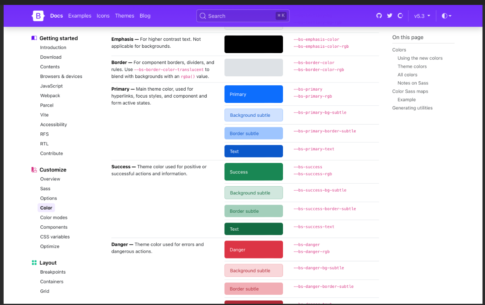

Html & css & bootstrap
Categorie: Webdesign | Gepubliceerd: november 2025

Beschrijving
In dit project heb ik een moderne, responsive website ontwikkeld met behulp van HTML5, CSS3 en het Bootstrap 5 framework. Het doel was om een mobielvriendelijke en visueel consistente website te bouwen die zich automatisch aanpast aan verschillende schermgroottes, van smartphones tot desktops.
Belangrijkste kenis
- Bootstrap: Bootstrap is een open-source front-end framework van Twitter voor het snel bouwen van responsive websites. Het biedt kant-en-klare HTML- en CSS-componenten zoals knoppen, navigatie en formulieren, die goed werken op zowel desktop als mobiel. 
- Html: HTML staat voor HyperText Markup Language en is de standaardtaal voor het maken van webpaginaim. De taal bestaat uit een reeks elementen die de structuur van een webpagina bepalen. Deze elementen kun je in feite zien als tags die de browser vertellen hoe de inhoud moet worden weergegeven.

- CSS: CSS (Cascading Style Sheets) bepaalt hoe HTML-elementen eruitzien op het scherm. Waar HTML de structuur van een website vormt, zorgt CSS voor de opmaak, kleuren, posities en het visuele ontwerp — vergelijkbaar met de inrichting van een huis.